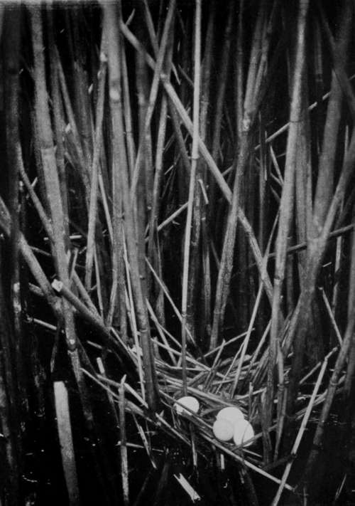
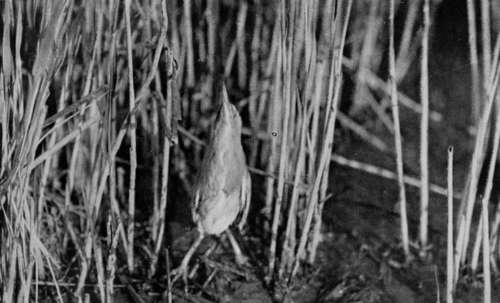
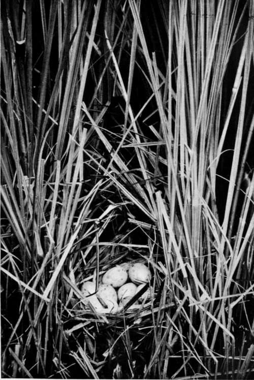
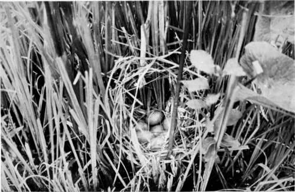

Birds'-Nesting In Hungary. Part 3
Description
This section is from the book "Bird-Hunting Through Wild Europe", by R. B. Lodge. Also available from Amazon: Bird-Hunting Through Wild Europe.
Birds'-Nesting In Hungary. Part 3
I hardly expected to find the Purple Heron (Ardea purpurea) nesting at such a late date, but on mentioning the name to my man he at once took me to a small colony in an out-of-the-way corner. The eggs were naturally much incubated, and no nest held more than three eggs, most of them only two, being probably second layings.
On the way thither we passed two nests of the Little Bittern (Ardetta minuta). The first had been known of before by my boatman, but since his last visit to the spot it had been looted by a Marsh Harrier, and the broken egg-shells were strewed about the disordered nest. The second was found by myself, for, thinking that the men were keeping too much to the narrow, navigable channels, and seemed very averse to getting their feet wet, I stopped my boat at a likely-looking place and waded through the tall reeds. I had not gone very far before I was waist-deep in mud and water, the water being very deep in this lake and the bottom very uneven, but I soon found another nest of Ardetta minuta containing five eggs, which proved to be much incubated. The nest was very small and slight, just a collection of small, dead reed-leaves and stems at the base of the growing reeds, on which the five white eggs were conspicuous enough.
Nest Of Little Bittern (Ardetta Minuta)
Little Bittern (Ardetta Minuta)
The Little Bittern is one of the most extraordinary birds I know. It is quite small-not much more than a foot in length-and its colour is dark greenish-black and light buff, strongly contrasted, but it is firmly convinced that it is invisible. In this idea it is justified by results-and this not by carrying fern-seed, or the invisible cap of fairyland, but simply by faith in its own power of immovability. When approached it will grasp the surrounding reeds with its very prehensile toes and point its yellowish beak straight up in the air. The long, compressed body, always kept facing the intruder, is so exactly like a dead reed-stem as to escape notice from all but the most keen-sighted observer. The dark back also much resembles the hard black shadows among the reed stems in the bright sun. Such faith has the bird in this extraordinary device that it will often allow itself to be caught alive by the hand. I have, in fact, done so myself, and have read of many similar instances.
The country here can hardly be called picturesque. With the exception of the acacia-trees, always to be found in the villages, and frequently bordering the roadsides, there is hardly a tree to be seen. You may drive for hours over undulating sandy plains, with nothing to break the horizon line save an occasional belt of acacias in the distance, or the long lever of the old-fashioned well, around which stand innumerable numbers of the white, long-horned cattle, so characteristic of the Hungarian plains, with their attendant herdsmen either mounted or on foot, and sometimes groups of uncouth-looking buffaloes.
The Hungarian cattle have most formidable horns. A pair in the new Museum of Agriculture in Budapest measure across the span 2.35 metres.
This museum was only opened on the 8th of June, 1907, and it is a striking testimony to the extraordinary advance of the Hungarian nation. In fact, when one sees the beautiful city of Budapest and its many fine buildings it is almost impossible to realize that only 250 years ago it was still in the paralyzing grip of the Turk. When the Turks left, the population of Budapest was 250, now it numbers 800,000, and the city is second to none in Europe in the beauty of its public buildings, its wide streets, and its evident prosperity.
Nest Of Water-Rail (Rallus Aquaticus)
Nest Of Little Crake (Porzana Parva)
For long almost exclusively a pastoral country, breeding horses and rearing cattle being the chief industry of its people, Hungary has recently realized the importance of agriculture, and her vast plains now produce great quantities of wheat, maize, roots, tobacco, and vines.
If the magnificent show of modern agricultural implements and specimens is a proof of the up-to-date and progressive state of things in rural Hungary, the models and implements in the ethnographical section show vividly the domestic occupations of the original inhabitants of the country-the primitive herdsmen, shepherds, and fishermen, the forerunners of the great Hungarian nation. Among other interesting objects one may see a series of models representing the evolution of the house. From the first rude wind-screen of reeds or bushes erected by primitive man as a protection against the elements, we can see the slow stages by which his posterity advanced towards civilization, until the four walls, and finally the roof, placed him in possession of a home. And in the country villages to-day one sees the same type of house as these earliest buildings. No doubt they are larger and better furnished, but they are the same low, whitewashed and reed-thatched cottages, standing each by itself, and scattered irregularly on each side of the wide, sandy road.
Goose-keeping seems to be a universal village industry, judging from the multitudes of geese one meets with round the villages. Each flock is guarded by a child, who accompanies them everywhere, and sees that one hissing family does not get mixed up with another while grazing along the roadsides or disporting themselves in the village pond. On hot days these ponds are full of a mixed crowd of naked children, geese, and yellow goslings, all enjoying themselves hugely in the muddy water.
Continue to: